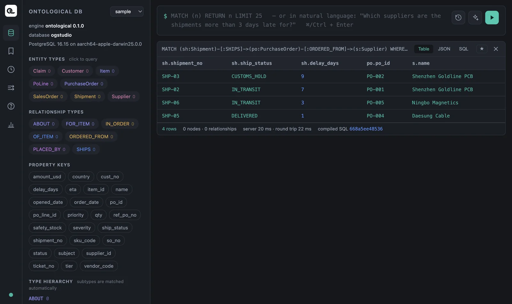

Open Ontological Portal and run the basic Cypher clauses — MATCH, WHERE, RETURN, ORDER BY and LIMIT — one at a time on the sample data.
Cypher: queries you draw#
Cypher is a query language that describes graph structure the way you would draw it. It started in Neo4j and is now the basis of GQL, the ISO standard graph query language.
| Picture | Cypher | Meaning |
|---|---|---|
| ○ | (s:Supplier) |
One node with the Supplier label, named s |
| ○→○ | (po)-[:ORDERED_FROM]->(s) |
An ORDERED_FROM relationship from po to s |
| Property | s.name |
The name value of node s |
It is easy to understand if you compare it with SQL's SELECT … FROM … WHERE.
| SQL | Cypher |
|---|---|
FROM supplier s |
MATCH (s:Supplier) |
WHERE s.country = 'China' |
WHERE s.country = 'China' |
SELECT s.name |
RETURN s.name |
ORDER BY … LIMIT 3 |
ORDER BY … LIMIT 3 |
JOIN … ON … |
Relationship pattern -[:REL]-> (Chapter 8) |
Opening the Portal#
On Home, click the Ontological Portal card. In the graph selector at the top left, choose sample. Every example in Part 4 runs on the sample graph.

| Area | Contents |
|---|---|
| Left: ENTITY TYPES | Node labels. Click one to insert a query for that label. |
| Left: RELATIONSHIP TYPES / PROPERTY KEYS | Relationship names and property names. Use them as a reference while writing queries. |
| Query box (top) | Write Cypher and run it with ⌘Enter (Ctrl+Enter on Windows) or the ▶ button. Type (n: to autocomplete labels, or n. to autocomplete properties. |
| Result card | Table, JSON and SQL views, plus a Graph view when you return nodes. ★ saves the query, ✕ closes the card. |
Your first query#
MATCH (s:Supplier)
RETURN s.supplier_id, s.name, s.country, s.tier
| s.supplier_id | s.name | s.country | s.tier |
|---|---|---|---|
| S-KR-01 | Hanbit Precision | Korea | 1 |
| S-KR-02 | Daesung Cable | Korea | 2 |
| S-CN-01 | Shenzhen Goldline PCB | China | 1 |
| S-CN-02 | Ningbo Magnetics | China | 2 |
| S-VN-01 | Hanoi Assembly | Vietnam | 2 |
MATCH specifies the graph pattern to find, and RETURN specifies what to include in the results. To get whole nodes, write RETURN s. That returns an object with all of the node's properties, and the result card gets a Graph view.
Filtering — WHERE#
MATCH (s:Supplier)
WHERE s.country = 'China' AND s.tier = 1
RETURN s.name
The result is one supplier, Shenzhen Goldline PCB. These are the conditions you can use in WHERE.
| Use | Example |
|---|---|
| Comparison | = <> < <= > >= — po.amount_usd >= 30000 AND po.amount_usd < 70000 |
| Logic | AND OR NOT — NOT s.country = 'Korea' |
| In a list | sh.ship_status IN ['IN_TRANSIT', 'CUSTOMS_HOLD'] |
| Strings | s.name STARTS WITH 'S', CONTAINS 'Gold', ENDS WITH 'PCB' |
| Missing values | po IS NULL, po IS NOT NULL |
If there is only one condition, you can write the property and value directly in the pattern.
MATCH (s:Supplier {supplier_id: 'S-CN-01'})
RETURN s
Comparing dates
You can compare date columns (opened_date, eta and so on) directly with strings such as '2026-08-29'. The engine converts them to the source type (date). There is no date() function yet.
cypher
MATCH (c:Claim) WHERE c.opened_date >= '2026-08-29'
RETURN c.ticket_no, c.opened_date
Sorting and limiting — ORDER BY · SKIP · LIMIT#
The three largest purchase orders:
MATCH (po:PurchaseOrder)
RETURN po.po_id, po.amount_usd, po.status
ORDER BY po.amount_usd DESC
LIMIT 3
| po.po_id | po.amount_usd | po.status |
|---|---|---|
| PO-001 | 82000 | OPEN |
| PO-005 | 60000 | OPEN |
| PO-002 | 41000 | OPEN |
You can sort by several keys, as in ORDER BY a, b DESC. SKIP 2 LIMIT 3 means “skip two, then take three”, which is how you split results into pages. Use AS to rename a column, as in RETURN po.po_id AS po_number (non-English names work too).
Removing duplicates and counting#
MATCH (s:Supplier) RETURN DISTINCT s.country
MATCH (s:Supplier) RETURN count(s) AS suppliers
The first query returns three rows (Vietnam, Korea, China), and the second returns 5.
Transforming values — functions and CASE#
MATCH (sh:Shipment)
RETURN sh.shipment_no,
CASE WHEN sh.delay_days > 3 THEN 'Delayed'
WHEN sh.delay_days > 0 THEN 'Watch'
ELSE 'OK' END AS status
ORDER BY sh.shipment_no
| sh.shipment_no | status |
|---|---|
| SHP-01 | OK |
| SHP-02 | Delayed |
| SHP-03 | Delayed |
| SHP-04 | OK |
| SHP-05 | Watch |
| SHP-06 | Watch |
| SHP-07 | OK |
| SHP-08 | OK |
These are the functions Ontological DB supports. If you use a function that is not on this list, the engine returns an error that shows the list.
| Category | Functions |
|---|---|
| Aggregation | count sum avg min max collect |
| String | toUpper toLower trim substring replace split toString |
| Numeric | abs ceil floor round sqrt rand toInteger toFloat |
| Graph | id elementId labels type length size keys exists |
| Other | coalesce timestamp datetime vector.similarity vector.distance genai.vector.encode |
Three ways to view results#
Choose a view at the top right of the result card.
- Table — shows the results as a table. This is the view you will use most.
- JSON — shows node objects as they are. This is the same format your app code receives (Chapter 19).
- SQL — the PostgreSQL SQL your Cypher was translated into. It shows how Ontological DB runs the query (Chapter 9).
Check yourself
Write the following in Cypher on the sample graph.
- The number and amount of purchase orders with status
OPEN, smallest amount first. - The number and expected arrival date (
eta) of shipments that are held at customs (CUSTOMS_HOLD) or in transit (IN_TRANSIT). - How many customers there are.
- The number and subject of claims whose severity (
severity) isHIGH.
Show answers
MATCH (po:PurchaseOrder) WHERE po.status = 'OPEN'
RETURN po.po_id, po.amount_usd ORDER BY po.amount_usd
PO-007 (12000), PO-008 (27000), PO-006 (33000), PO-002 (41000), PO-005 (60000), PO-001 (82000) — 6 in total.
MATCH (sh:Shipment) WHERE sh.ship_status IN ['IN_TRANSIT', 'CUSTOMS_HOLD']
RETURN sh.shipment_no, sh.eta
Three: SHP-02, SHP-03 and SHP-06.
MATCH (cu:Customer) RETURN count(cu) AS customers
3.
MATCH (c:Claim) WHERE c.severity = 'HIGH' RETURN c.ticket_no, c.subject
T-1 “Controller power failure” and T-3 “PCB soldering defect”.